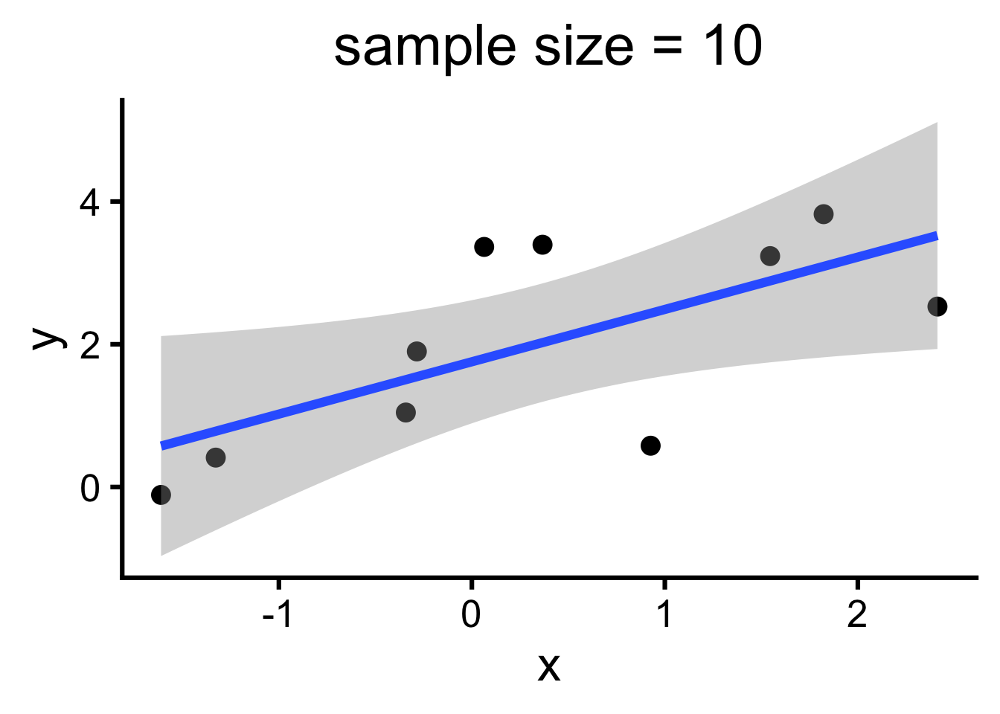
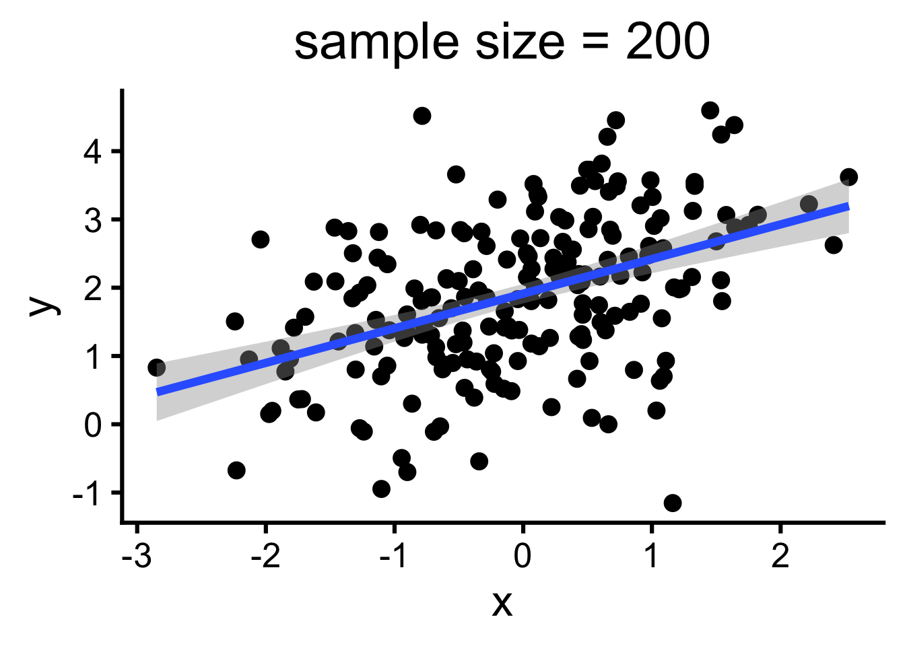
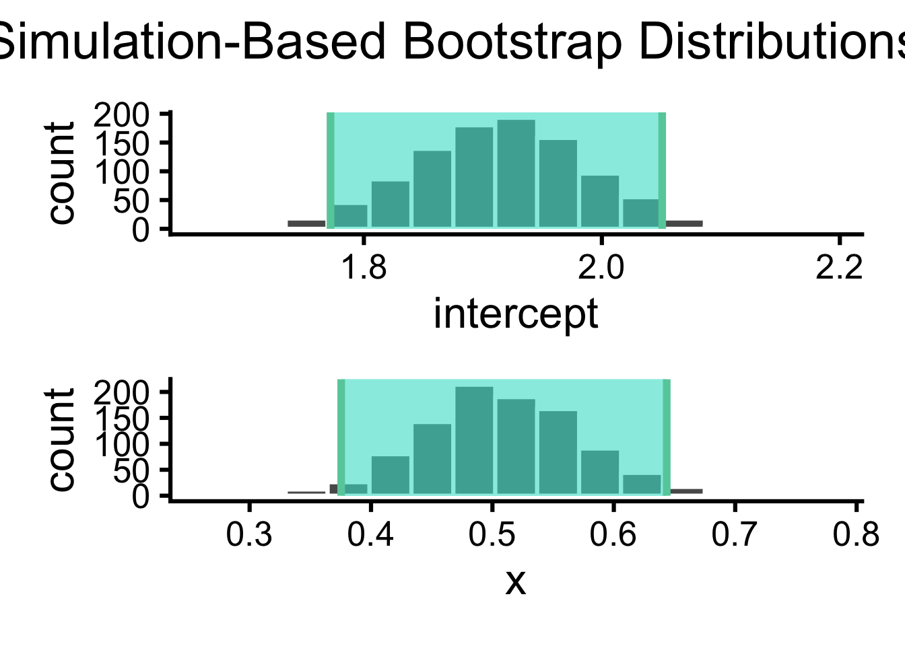
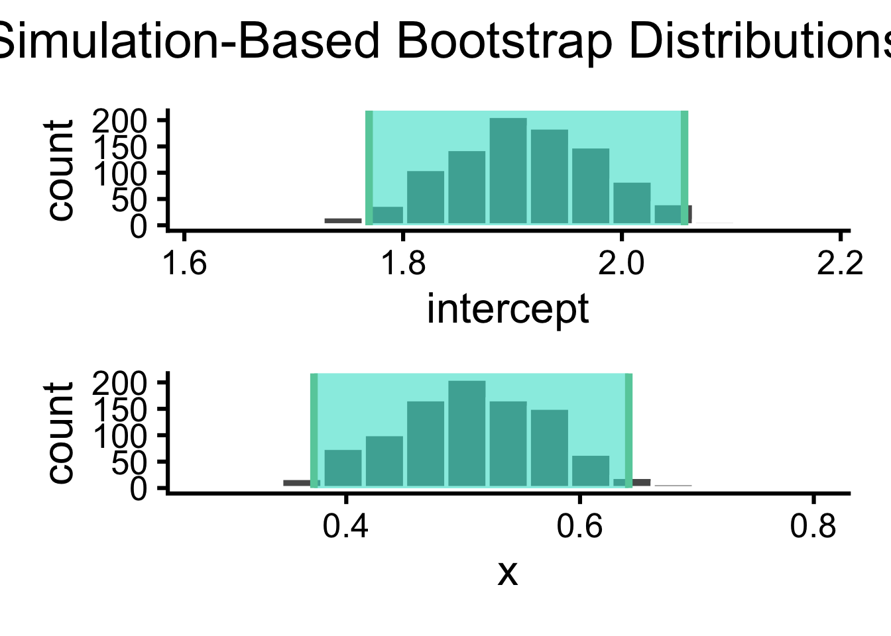
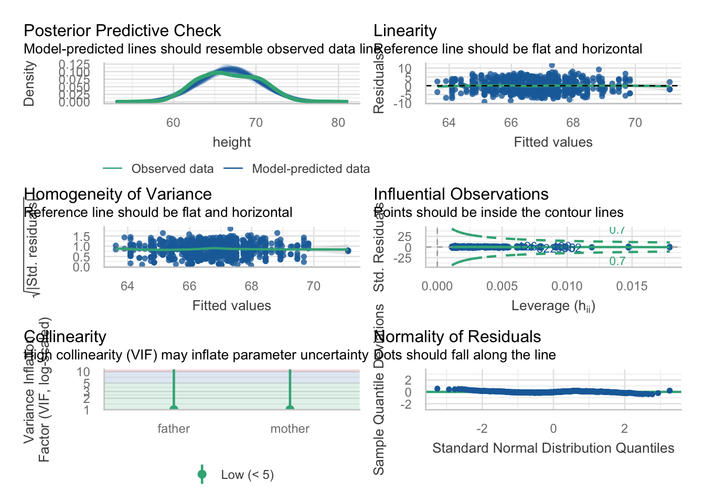

We’ve selected a model (model selection) and fit a model to a set of data (model fitting). One question we might want to ask next is how well does this model describe the data (model accuracy)?
We can visualize our data and the model fit to get a sense of how accurate the model is. But we also want a way to quantify model accuracy – some metric by which to determine whether a model is useful, or how it compares to other models.
Last week we learned about one metric of model “goodness”, Sum of Squared Error (SSE). We could certainly quantify our model accuracy with SSE, but it would be difficult to interpret since it depends on the units of the data.
Today we’ll learn about another metric, \(R^2\) which is easier to interpret and independent of units. \(R^2\) quantifies the percentage of variance in our response variable that is explained by our model.
Coefficient of determination, \(R^2\)
The coefficient of determination, \(R^2\), quantifies the proportion of variance in the response variable, \(y\), that is explained by the model. Since you’ve already learned about Sum of Squared Error (SSE) as a way to quantify how well a model fits the data, you already have the tools to understand \(R^2\).
To obain \(R^2\) for a model, we compare the SSE of our model with the SEE of the simplest possible model: y ~ 1 (the mean of the observed \(y\) values). We call this simple model the reference model in the \(R^2\) equation.
Which helps us appreciate what the equation is doing in terms of SSE:
The \(total \; variance\) (denominator) is quantified as the sum of squared error in which we substract the mean from the data (the simplest model’s prediction): \(\sum_{i=1}^n (y_i - \overline{y})^2\). In words, take each y value and subtract it from the mean y value, square it, then add them all up.
The \(unexplained \; variance\) (numerator) is quantified as the sum of squared error in which we subtract the model value from the data (residuals): \(\sum_{i=1}^n (y_i - m_i)^2\). In words, take each y value and subtract it from the model value (the model’s prediction) for that data point, square it, then add them all up.
We then subtract the proportion \(\frac{unexplained \; variance}{total \; variance}\) from 1 to get the proportion of variance that is explained, and then we multiply by 100 to turn it into the percent of variance explained.
There is an upper bound of 100%: the situation where the model explains all the variance (it matches the data exactly)
There is technically no lower bound, since models can be arbitrarily bad. 0% indicates the model explains none of the variance (it predicts the mean of the data but nothing else)
\(R^2\) overestimates model accuracy
One thing we can ask is how well the model describes our specific sample of data. But the question we actually want to answer is how well does the model we fit describe the population we are interested in.
The problem is that we usually only have access to the sample we’ve collected and \(R^2\) tends to overestimate the accuracy of the model on the population. In other words, the \(R^2\) of the model we fit on our sample will be larger than the \(R^2\) of the model fit to the population.
Further, the population is (usually) unknown to us. To quantify the true accuracy of a fitted model – that is, how well the model describes the population, not the sample we collected – we can use a technique called cross-validation.
Before we learn about cross-validation, let’s first try to gain further conceptual understanding of why\(R^2\) tends to overestimate model accuracy.
Overfitting
When you fit a model to some sample of data, there is always a risk of overfitting. As the modeler, you have the freedom to fit your sample data better and better (you can add more and more terms, increasing the \(R^2\) value). But you need to be careful not to fit the sample data too well.
This is because any given set of data contains not only the true, underlying patterns we are interested in (the true model or signal), but also random variation (noise). Fitting the sample data too well means we fit not only the signal but also the noise in the data.
An overfit model will perform really well on the data it has been trained on (the sample) — we can even fit the sample perfectly if we add enough terms! - but an overfit model will be bad at predicting new, unseen values. Image we collect an additional data point drawn from the population. An overfit model would predict this point poorly!
Our goal is to find the optimal fitted model – the one that gets as close to the true model as possible without overfitting. But we have no way of knowing which part of the data we sampled is signal and which part is noise. So, we use cross-validation to help identify overfitting.
Model complexity
In the lecture on model specification, we briefly mentioned that we would also want to take into consideration the complexity of the model. Simple models are easier to interpret but may not capture all complexities in the data, while complex models can suffer from overfitting the data or be difficult to interpret. Let’s expand on this in the context of model accuracy.
Complex models have the potential to describe many kinds of functions, and the true model — the model that most accurately describes the population we sampled our data from — could be among them. However, complex models have a lot free parameters to estimate (by definition, that’s what makes them complex!), which makes it more difficult to obtain stable parameter estimates with small samples sizes or noisy data.
Simple models are limited in the types of functions they can describe, so they may not approximate the true model very accurately. However, they have fewer free parameters, which makes it easier to obtain stable parameter estimates with small sample sizes or noisy data.
We have no way of knowing a priori whether a simple or complex model will be more accurate for a given dataset. It depends on many things, including the data we have, the underlying relationships, and our research questions. Luckily, we can use cross-validation to find out, trying different models and quantify each model’s accuracy.
Cross-validation
Remember from above, the question we actually want to answer with \(R^2\) is not how well does the model we fit describe the sample we collected, but how well does the model we fit describe the population we are interested in. But \(R^2\) on the sample will tend to overestimate the model’s accuracy on the population. To estimate the accuracy of the model on the population, we need to use a simple but powerful technique called cross-validation. Given a sample of data, there are 3 simple steps to any cross-validation technique:
Leave some data out
Fit a model (to the data kept in)
Evaluate the model on the left out data (e.g. \(R^2\))
There are many ways to do cross-validation — reflecting that there are many ways we can leave some data out — but they all follow this general 3-step process. We’ll focus on two common approaches in this class:
In leave-one-out cross-validation, we leave out a single data point and use the fitted model to predict that single point. We repeat this process for every data point, then evaluate each model’s prediction on the left out points (we can use \(R^2\)!).
In \(k\)-fold cross-validation, instead of leaving out a single data point, we randomly divide the dataset into \(k\) parts and use the fitted model to predict that part. We repeat this process for every part, then evaluate each model’s prediction on the left out parts (again, we can use \(R^2\)!).
How do we decide which cross-validation approach to use? There are two trade-offs to consider:
How many iterations do we want to do? The more iterations, the more reliable our accuracy estimate will be. But the more iterations, the more computational resources are required.
How much data do we want to use for each part? The more data we use to fit the model, the more accurate the model will be and the more stable the parameter estimates will be. But the more data we use in to estimate reliability, the more reliable our accuracy estimate will be.
For example, in leave-one-out cross-validation we use a lot of iterations (one for each data point), so we need a lot of computational resources, but we get to use almost all the data to fit our model (all but one point!) and all the data to calculate \(R^2\).
Keep in mind that the parameter estimates we obtain on each iteration will be different, because they depend on both the model selected (stays the same each iteration) and the data we fit with (changes each iteration). So the \(R^2\) we compute via cross-validation really reflects an estimate of our model’s accuracy when fitted to a particular amount of data.
Other methods
There are other ways to evaluate models beyond cross-validaiton.
One common way is using an F-test to determine whether a more complex model produces a significantly better fit than a simpler one. This approach only applies for nested models, which just means that one model is a simpler version of another more complex one.
You may also encounter AIC (Akaike Information Criterion) and BIC (Bayesian Information Criterion), for example, which are parametric approaches that attempt to compare different models and find the optimal fit (helping you avoid overfitting and excessively complex models).
In general AIC considers how well the model fits the data, the number of parameters, and the sample size (there is a penalty for more complex models); BIC is similar but has a stronger penalty for complex models (so will inherently favor simpler models).
We’ll focus on cross-validation in this class, because it makes fewer assumptions than metrics like AIC/BIC and is simpler to understand conceptually. But we’ll also show you the F-test approach, since it’s widely used in the sciences.
F-test (via anova())
The F-test is closely related to \(R^2\). When comparing a simpler model to a more complex one, the change in \(R^2\) can be evalutated using an F-test to see if adding predictors significantly improves model fit. (often expresse as \(\Delta R^2\)) Recall that, for \(R^2\), when we compared \(SSE_{model}\) (the sum of squared error of our model) to \(SSE_{reference}\) (the sum of squared error of the intercept-only model), we noted that \(SSE_{reference}\) is always going to be greater than \(SSE_{model}\). But what we actually want to know is whether it is significantly greater. Said another way, we want to know whether adding terms to the model significantly improve the model’s ability to explain the response variable.
Let \(R^2_{simple}\) be the \(R^2\) of the simpler model and \(R^2_{complex}\) be the \(R^2\) of the more complex model. The change in \(R^2\) (also called \(\Delta R^2\)) is:
\(\Delta R^2 = R^2_{complex} - R^2_{simple}\)
We can then compute the F-statistic to determine if \(\Delta R^2\) is significant.
\(F = \frac{\Delta R^2 / p }{(1-R^2_{complex}/(n-k-1))}\)
Where:
\(p\) is the number of additional predictors in the complex model
\(n\) is the total sample size
\(k\) is the number of predictors in the complex model
We can understand the numerator and denominator of this equation in the following way:
The numerator represents the increase in explained variance per additional predictor.
The denominator represents the remaining unexplained variance, adjusted for sample size and the complexity of the model.
In R, we can perform this model comparison via and F-test via a call to anova():
If the F-statistic is large, it suggests that the additional predictors in the complex model significantly improve model fit. To help you decide, anova() returns a p-value. You can understand this p-value as asking: how likely it is to observe this value of F if we randomly added this many predictors to our model?
Back to model selection
Building models is itself an iterative process: we can use model accuracy obtained via cross-validation to determine which model to select (as a way to find the elusive optimal model fit).
Cross-validation seems preferable, as it makes fewer assumptions than these approaches and is conceptually simpler. However, a drawback of cross-validation is that it is computationally intensive.
Beyond model accuracy, there are other practical things one might want to consider when selecting a model, such as ease of interpretation and availability of resources (the data you can collect, the computing power you have, etc.)
Model reliability
Basic idea
Imagine you’ve just fit a model to some data, and now you have values for its parameters. But how sure can we be about those parameter values? Well, this uncertainty has to do with the difference between the data you sampled and the larger population it represents. We’re not really interested in the model parameters that just fit your sample—our real goal is to find parameters that would best describe the entire population from which that sample came.
Recall from Sampling Distribution week that, for any statistic computed on a sample from a population there’s some sampling error. We add error bars to show the range of values we’d expect our statistic to take on if we took new samples from the population. In previous weeks we were working with single summary statistics like the mean, but these same principles apply to models: model parameters estimated from a sample will also vary because of sampling error. By putting error bars on these parameters, we indicate how these estimates might change with different samples.
Model reliability, then, is about how stable those parameter estimates are in the face of sampling error. And the more data we collect, the more reliable our estimates become, reducing uncertainty in our model’s parameters.
Code
ggplot(data_n10, aes(x = x, y = y)) +geom_point() +labs(title ="sample size = 10") +geom_smooth(method ="lm", formula ="y ~ x")ggplot(data_n200, aes(x = x, y = y)) +geom_point() +labs(title ="sample size = 200") +geom_smooth(method ="lm", formula ="y ~ x") model_n10 <-lm(y ~ x, data = data_n10)summary(model_n10)model_n200 <-lm(y ~ x, data = data_n200)summary(model_n200)


Call:
lm(formula = y ~ x, data = data_n10)
Residuals:
Min 1Q Median 3Q Max
-1.8557 -0.6285 -0.0113 0.6370 1.5624
Coefficients:
Estimate Std. Error t value Pr(>|t|)
(Intercept) 1.7548 0.3740 4.692 0.00156 **
x 0.7333 0.2862 2.562 0.03352 *
---
Signif. codes: 0 '***' 0.001 '**' 0.01 '*' 0.05 '.' 0.1 ' ' 1
Residual standard error: 1.138 on 8 degrees of freedom
Multiple R-squared: 0.4508, Adjusted R-squared: 0.3821
F-statistic: 6.566 on 1 and 8 DF, p-value: 0.03352
Call:
lm(formula = y ~ x, data = data_n200)
Residuals:
Min 1Q Median 3Q Max
-3.6565 -0.6757 0.0689 0.6032 3.0019
Coefficients:
Estimate Std. Error t value Pr(>|t|)
(Intercept) 1.91308 0.07233 26.448 < 2e-16 ***
x 0.50704 0.07236 7.007 3.72e-11 ***
---
Signif. codes: 0 '***' 0.001 '**' 0.01 '*' 0.05 '.' 0.1 ' ' 1
Residual standard error: 1.021 on 198 degrees of freedom
Multiple R-squared: 0.1987, Adjusted R-squared: 0.1947
F-statistic: 49.1 on 1 and 198 DF, p-value: 3.724e-11
Calculating reliability
To calculate error bars on our model parameter estimates, we can use bootstrapping, a nonparametric approach that makes minimal assumptions and uses the data itself to construct a sampling distribution. You already know how to do this: we used bootstrapping earlier when we explored sampling distributions! Here’s a reminder of the process: we generate many “bootstrap” samples by resampling our original data (with replacement). Then, we fit our model to each of these samples and observe the distribution of parameter estimates across them. This distribution provides a way to assess the variability in parameter estimates if we were to draw different samples from the population.
Code
# get the observed fit observed_fit <- data_n200 %>%specify(y ~ x) %>%fit() # constructe the sampling distribution boot_fits <- data_n200 %>%specify(y ~ x) %>%generate(reps =1000, type ="bootstrap") %>%fit() # get the confidence interval ci <- boot_fits %>%get_confidence_interval(point_estimate = observed_fit, # from abovelevel =0.95 )# visualize the sitribution and ci boot_fits %>%visualize() +shade_ci(endpoints = ci) ci

# A tibble: 2 × 3
term lower_ci upper_ci
<chr> <dbl> <dbl>
1 intercept 1.77 2.05
2 x 0.375 0.644
When we fit a model using lm() in R, for example, the summary output already provides us with standard errors (S.E.) for each parameter. These standard errors are based on a parametric approach, where we assume that the residuals (errors) follow a normal distribution. Parametric methods like this can work well for large, normally distributed data, providing standard error estimates directly from the model. Bootstrapping, in contrast, doesn’t assume normality and is more flexible for small or non-normal data, allowing us to approximate error distributions without relying on these assumptions.
Code
# get the observed fit observed_fit <- data_n200 %>%specify(y ~ x) %>%fit() # constructe the sampling distribution boot_fits <- data_n200 %>%specify(y ~ x) %>%generate(reps =1000, type ="bootstrap") %>%fit() # get the confidence interval ci <- boot_fits %>%get_confidence_interval(point_estimate = observed_fit, # from abovelevel =0.95, type ="se" )# visualize the sitribution and ci boot_fits %>%visualize() +shade_ci(endpoints = ci) cisummary(model_n200)

# A tibble: 2 × 3
term lower_ci upper_ci
<chr> <dbl> <dbl>
1 intercept 1.77 2.06
2 x 0.372 0.642
Call:
lm(formula = y ~ x, data = data_n200)
Residuals:
Min 1Q Median 3Q Max
-3.6565 -0.6757 0.0689 0.6032 3.0019
Coefficients:
Estimate Std. Error t value Pr(>|t|)
(Intercept) 1.91308 0.07233 26.448 < 2e-16 ***
x 0.50704 0.07236 7.007 3.72e-11 ***
---
Signif. codes: 0 '***' 0.001 '**' 0.01 '*' 0.05 '.' 0.1 ' ' 1
Residual standard error: 1.021 on 198 degrees of freedom
Multiple R-squared: 0.1987, Adjusted R-squared: 0.1947
F-statistic: 49.1 on 1 and 198 DF, p-value: 3.724e-11
What if we want to understand not just individual parameters but also a combined metric or the overall function described by our mode? Bootstrapping can be used here well: we compute whatever quantity we care about for each bootstrap sample, then examine how that quantity varies across all iterations.
There are other methods resampling techniques beyond bootstrapping that you might hear about in the context of model reliability, like jackknifing and split-half analysis. Jackknifing is faster but generally less accurate and flexible: we leave out one observation at a time and calculate our estimates on the remaining data. Split-half analysis - where we split the data and analyze each half separately — gives a rough sense of sampling error. However, unless computation is a limiting factor, bootstrapping is usually preferred because it offers a balance of accuracy and adaptability.
Correlated errors
When a model has multiple parameters, the errors in their estimates may be correlated. This happens because, in models with more than one parameter, sampling error isn’t just a single value; it’s part of a multidimensional distribution. So, putting separate error bars on individual parameters can miss the bigger picture, especially when parameters interact.
Imagine a simple case with a linear regression model with two correlated predictors (a child’s age and height, for example). If these predictors are highly correlated, then increasing the weight of one can often be offset by decreasing the weight of the other. This results in a kind of “trade-off” between the weights, where an error in one weight often corresponds to an opposite error in the other. When we look at how these weights vary across samples, we might see a negative correlation in the errors between the two weights.
We can use a simple function check_model() that is part of the easystats package to check our model for correlated errors. check_model() returns a number of important checks of model assumptions. Colinearity checks for correlated errors and returns a VIF (Variance Inflation Factor):
VIF = 1: no correlation with other predictors
VIF > 1 and < 5: Moderate correlation with other predictors (acceptable)
VIF > 5: Correlation with other predictors is problematic (high multicolinearity)
galton_model <-lm(height ~ father + mother, data = Galton)check_model(galton_model)

For highly correlated regressors, these individual weights may have low reliability, meaning their exact values can fluctuate. However, the model as a whole may still be reliable. Even if the individual weights vary, the combined model output (a weighted sum of the predictors) can remain stable across different samples.
Accuracy v. Reliability
Model acuracy and model reliability are closely related concepts in model building, but they aren’t the same. Accuracy refers to how close a model’s predictions are to the true values we want to predict. Reliability, on the other hand, is about the model’s stability—how consistent the model’s parameters and outputs are when new data is sampled.
Let’s break down the difference with four scenarios:
Reliable and accurate: The model is both close to the true model and stable across different samples. This is the ideal case, indicating we have enough data to produce both a precise and consistent model fit.
Reliable but inaccurate: The model parameters are stable across samples, meaning it’s reliable, but it’s far from the true model. This could happen if our model is structurally limited or misses some aspect of the data, even if we have plenty of data for stable estimates.
Unreliable but accurate: This situation is unlikely. Without enough data, the model’s predictions will fluctuate widely from sample to sample, making it hard to consistently approximate the true model. So, without reliability, achieving accuracy is improbable.
Unreliable and inaccurate: Here, the model’s estimates are unstable and far from the true model. This could be due to either insufficient data or an inappropriate model choice that doesn’t match the data’s structure. With limited data, it’s hard to tell which factor is to blame.
In short, accuracy tells us how correct a model is, while reliability tells us how consistently it performs across samples. Both qualities are essential but address different aspects of model quality.